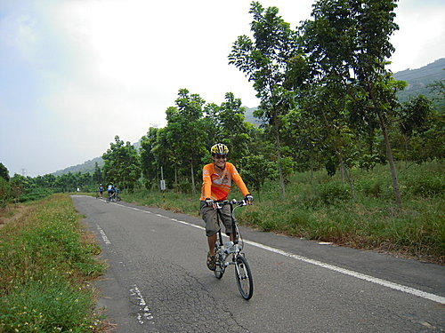
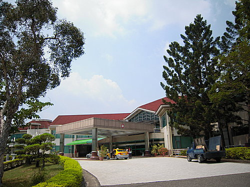

南台灣酷熱盛夏季節，
車友們為了避暑，
紛紛改採其他休閒活動。
眾獅友們，
經過了一季漫長夏天的執伏，
正苦尋適合的復出時機。
託培睿兄喜訊的福份，
大家把握良機，
初秋時節，
大崗山朝勝暖身之旅於是展開。
本次係由地頭蛇富哥規畫騎乘路線，
出發地為田寮鄉公所
順道推薦本次行程最夯車款--
DAHON公路車小摺—27段變速馬力超強.
富哥沿路領騎鄉間小道
並以地陪身分
詳加介紹田寮及阿蓮之風土民情，
受益頗豐。
河東獅之超級帥哥出場囉

大崗山風景區主要分為宗教區及自然生態區
富哥有感大家平日盡受紅塵俗事牽掛，
於是先安排大家上宗教區淨化心靈。

沿途儘是UP的爬坡路段，
大家低頭埋頭苦幹，
未到寺廟已滿身大汗，
眾人均已領略，
低頭謙卑為懷之道理。
大崗山綠色之美，成為清修佛寺的首選，
遍佈山區寺宇多達10多座，素有「台灣佛山」之稱，
香火鼎盛，遊客絡繹不絕，
其中以歷史超過200年的超峰寺最著名，
和岡山樹色並列為高縣八景之一，
是追求心靈平靜和登山健行的首選。
三尊佛是超峰寺前最名顯的地標。

生態景觀園區花草扶蘇，綠樹成蔭，
且可眺望整個路竹、阿蓮地區，視野極佳。

返回鄉公所路途中，
躬逢大南天廟會陣頭表演，
熱鬧有趣，信徒虔誠
願求--風調雨順，國泰民安。
大崗山高爾夫球場綠意盎然，
放眼望去，心曠神怡。

祝新郎新娘永浴愛河，百年好合。
超人 於 2009-09-24 01:45:04 回應
本來不是預計本篇是要由富哥主筆的，但，看這筆法應該還是由小獅操刀的吧。 真慘，當天上超峰寺，小揚說看我第一次牽車，我這幾天一直回想這句話，對了，我們以前上雷達站捷徑，好像每次都用牽的（但那好像是一年多以前的事了）。真懷念當時一群人騎車上雷達站的日子，真快樂！ 昨天上山海宮，到現在腳還在酸，看來我要多練車了！ 小超